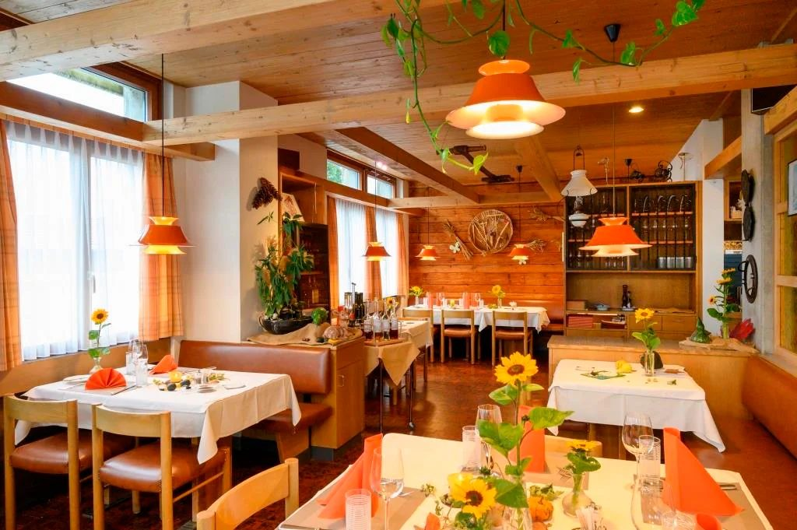
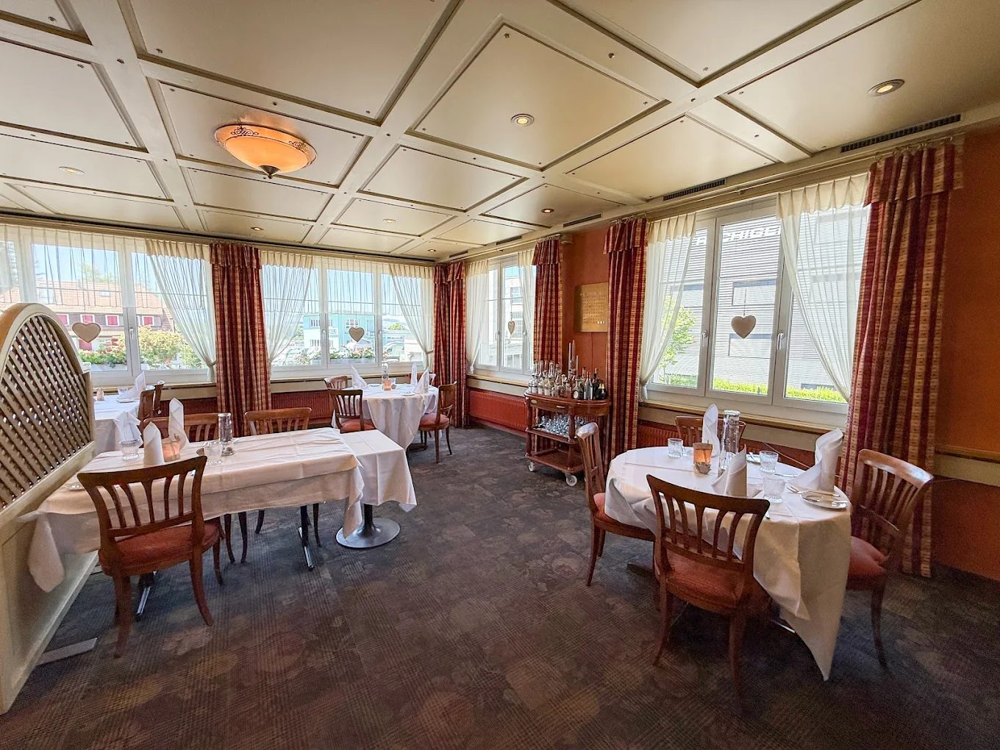
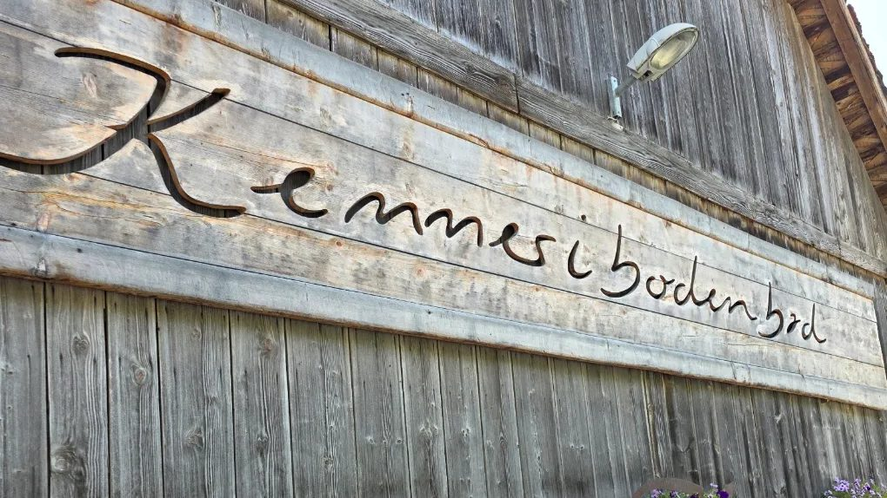

Die Ziele
Ausgewählte Gilde-Restaurants für Ihre Ausfahrt
Für unsere kuratierten Oldtimer-Ausfahrten steuern wir jeweils ein inhabergeführtes Gilde-Restaurant im Kanton Bern an. Jeder Landgasthof ist freitags geöffnet und steht für ehrliche Küche in ruhiger Umgebung.



Ziel wählen und Unkostenbeitrag berechnen
Wählen Sie Ihren Wunsch-Landgasthof direkt im Konfigurator. Ernährungswünsche und Allergien geben wir mit Ihrer Anfrage weiter.